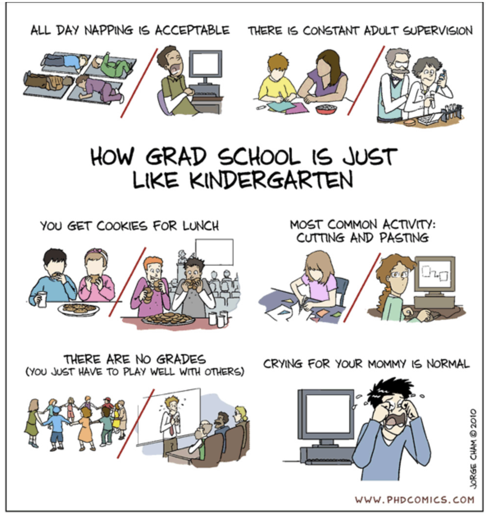

About
I am a PhD student in Computing Science at the University of Alberta, under the supervison of Bailey Kacsmar at PUPS: Practical Usable Privacy and Security Research Lab. My research investigates how applying privacy-enhancing technologies (PETs) to automatic decision-making (ADM) systems can conflict with other ADM objectives, such as utility, fairness, and protection against adversarial manipulation. I am also interested in designing PETs that align with end-users' priorities when trade-offs arise while still meeting technical requirements.
Prior to joining my PhD, I received my MSc in Computer Science from the University of Alberta. Before joining the University of Alberta, I worked as a Research Assistant at the City University of Hong Kong, Hong Kong.
News & Upcoming
- Poster: My poster titled - "Perceptions of Privacy Trade-offs in Automated Decision-Making Systems" has been accepted in Privacy Enhancing Technologies Symposium, July 20–25, 2026. Calgary, Canada.
-
Volunteer:
Privacy Enhancing Technologies Symposium, July 20–25, 2026. Calgary, Canada.
- If you are attending PETs this year, please come say hi. I will be here and there, everywhere.
- Student Volunteer (Citation Checker): Symposium On Usable Privacy and Security 2026
- Attendee: Upper Bound AI Conference, Spring 2026
- Artifact Review Committees: Privacy Enhancing Technologies Symposium 2026, Winter 2026
- Winner: GSA Mental Health Photo Contest 2026, organized by The Graduate Students’ Association (GSA), Winter 2026
- Successfully defended MSC Thesis: Title - Contextualizing Trade-offs: The Interplay of Privacy, Fairness, and Robustness in High-Stakes Automatic Decision Systems, Fall 2025
